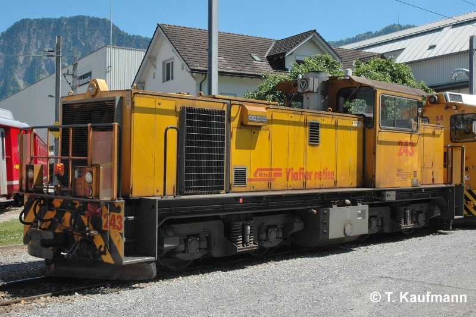
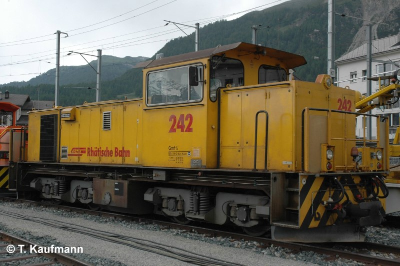

Allgemein
| Baujahr | 1991 |
| Einsatz | StN, ChA |
| Antriebstechnik | Dieselmechanischer Antrieb (Voith-Getriebe) |
| Leistung | 760 PS / 559 kW |
| Ergänzungsbremse | Hydraulische Getriebebremse |
| Stationiert | Infrastruktur / Bahndienst |
Technische Daten
| Geschwindigkeit | 60 km/h (Reihe A) |
| Länge | 11.70 m |
| Gewicht | 50 t |
| Bremsgewicht | 50 t |
| Feststellbremse | Fsp 35 t (42 kN) |
Fahrzeugausrüstung
| Vielfachsteuerung | keine |
| Funkfernsteuerung | ja |
| Zugbeeinflussung | 242: ZSI E 243: ZSI 127 |
| Heizleitung | keine |
| Speiseluft-Leitung | ja, durchgehend |
| Bremssystem | Vakuum-Hauptleitung |
| LBT-Leitung | keine |
| Steuerleitung Spurpflug | ja |